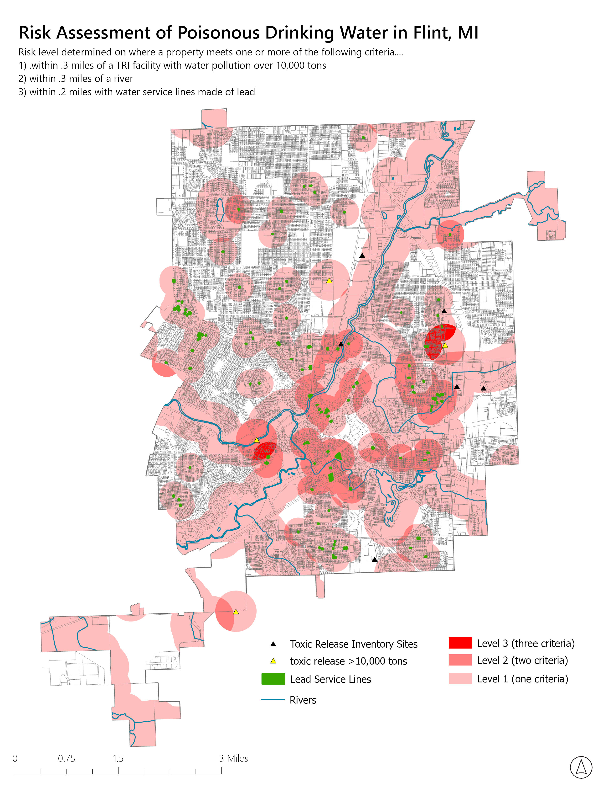

Problem
In Flint, Michigan we need to use multiple different data sets and criteria to identify who is at the greatest risk for exposure to poisinous drinking water.
Narrative
To solve this problem, I used multiple GIS tools to calculate the
areas most at risk for contamination exposure. I first used attribute
selection to isolate Toxic Release Inventory (TRI) sites with more
than 10,000 tons of pollution as well as areas where water mains
were constructed from lead pipes. I then used the Buffer tool to
create polygons at specific distances around lead water mains,
rivers, and toxic pollution sites.
Using the Intersect tool, I calculated the areas of overlap between
these criteria to identify locations exposed to multiple potential
sources of contamination. Different shades of red were then used to
distinguish three levels of contamination risk based on the number
of overlapping criteria. This analysis demonstrates how GIS can be
used to identify environmental risk areas and support decision-making
related to public health and infrastructure investment.
GIS Tools and Skills Used
-
Buffers – Buffers provide an area at a specific
distance around an object (area, line, or point).
-
Multipart to Singlepart – Multipart to Singlepart
breaks an object that has been dissolved into a multipart object
into its single parts, creating separate object instances within
the layer.
-
Dissolve – A Dissolve takes multiple objects
within a layer and combines them into either a single part or
multiple parts based on a specific field.
-
Spatial Join – Spatial Join allows you to attach
vector data based on spatial criteria rather than using common
tabular data.
-
Clip – A Clip can trim a vector object using
another vector. This helps keep a map clean or focus on a
specific area.
-
Erase – This command can use a polygon vector
to cover or remove data from another vector.
-
Intersect – Intersect allows you to determine
the overlapping areas of two or multiple different vectors.
-
Union – Union combines multiple vectors into a
single vector layer. This allows for the combination of multiple
different areas to define a larger region.
← Back to Portfolio